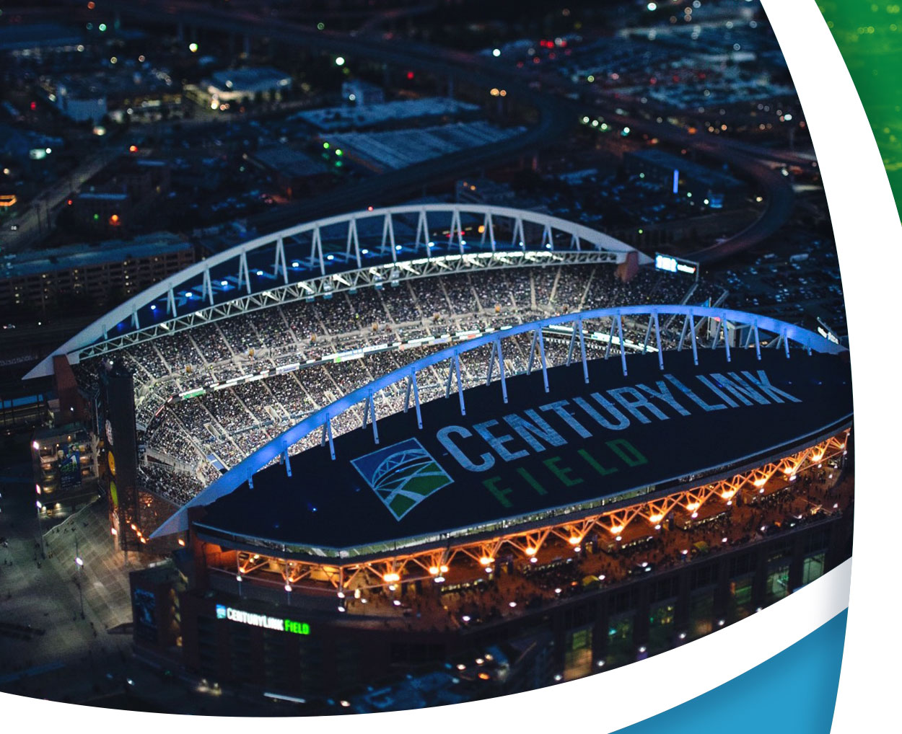

CenturyLink Stadium
CenturyLink Field is a multi-purpose stadium in Seattle, Washington, United States. Located in the city's SoDo neighborhood, it is the home field for the Seattle Seahawks of the National Football League (NFL), and the Seattle Sounders FC of Major League Soccer (MLS).


In 1996, Paul G. Allen obtained an option to purchase the Seattle Seahawks and launched a campaign to win public support for a new world-class football/ soccer stadium and exhibition center. Six years later, the dream became reality as the Seahawks opened the 2002 preseason against the Indianapolis Colts in new Seahawks Stadium, renamed Qwest Field on June 2, 2004. Sounders FC hosted their inaugural MLS regular season match at Qwest Field on March 19, 2009, defeating the New York Red Bulls 3-0. After seven seasons, the field was renamed CenturyLink Field on June 23, 2011. The facility, built atop of the site of the Kingdome, is not only home to the Seahawks and Sounders FC, but the stadium accommodates many levels of soccer competition, including Major League Soccer, amateur, international, World Cup and collegiate soccer.
CenturyLink Field is designed with a 68,740 seat capacity (37,722 for MLS regular season), with 5,000 additional seats available for special events, and 1,400 seats for fans with disabilities. With a roof covering 70 percent of the seating area, fans will enjoy wide, comfortable seats with sideline seating a mere 52 feet from the playing field and end-zone seats just 40 feet from the action. The facility also features a dozen elevators and expansive concourses with an ample provision of concessions stands and restrooms.
In addition to having perfect views of the field and surrounding areas, fans experience elements of diversity and culture in part of the Stadium Art Program. In 1998, a request for qualifications yielded a total of 254 responses from around the United States and Canada. After reviewing the full range of submissions, 12 artists and projects were selected. Today, the stadium includes nearly $2 million worth of art.